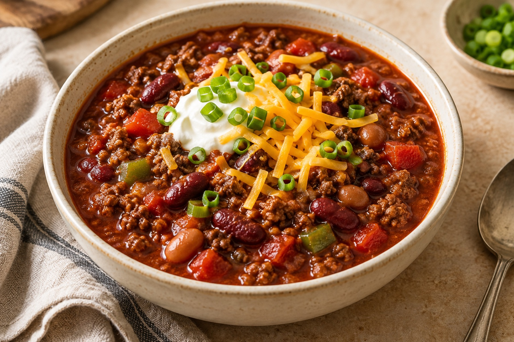

AN EVERYDAY COOKBOOK
Recipes worth
keeping.
For the everyday dinners, the big-batch favourites,
and favourites worth making again.

Instant PotMeal prep / Freezer friendly
Instant Pot Beef & Bean Chili
Hearty beef, tender beans, and a smoky tomato base. A little prep now, plenty of good dinners later.
Room for the next favourite.
More good recipes to come.No recipes match that search. Try “chili” or “meal prep”.